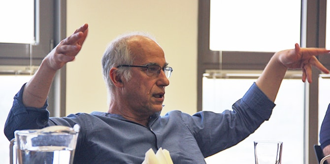
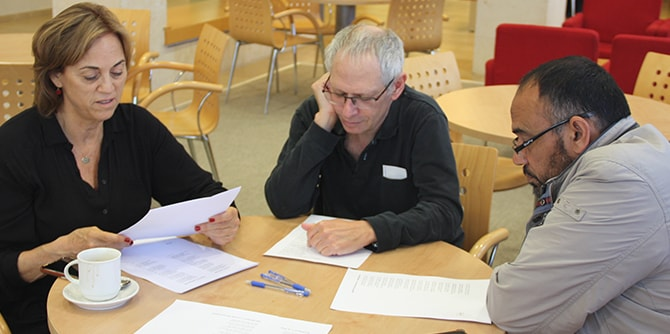

המפגש נפתח בקריאה בחברותות של הטקסט "בינו נא מורדים" שנכתב על ידי ר' דוד בוזגלו. קטע זה מושר לפי המנגינה של השיר הידוע "באב אל ווד" שכתב חיים גורי, והוא מחבר מילים ושירה פיוטית שיוצקות פרשנות חדשה של יצירה המבוססת על השאיפה הישראלית לשלום.
לאחר מכן התכנסו המשתתפים למפגש עם ד"ר מאיר בוזגלו, פילוסוף החוקר שאלות של מסורתיות בזיקה לזהות יהודית ולתרבות ישראלית. דרך עיון בפיוט של ר' בוזגלו, הרצה בוזגלו על היווצרותה של המסורתיות כמרחב אמצעי ומפשר בין חילוניות לדתיות בחברה היהודית בישראל, וכתהליך התפתחות דיאלקטי השונה מתפיסות דוגמטיות של זהויות נפרדות. פיוטו זה של ר' בוזגלו, שהוא כאמור בעל זיקה לטקסט קנוני אחר בתרבות הישראלית, יוצק פרשנות חדשה לתפיסה של הישראליות. זהו מרחב המכיל מגוון רחב של קולות – בשונה מתפיסת "כור ההיתוך" הרואה במורשות התרבותיות השונות מטרד – וצעד מחדש נוסף מעבר לפריזמה הרב-תרבותית המפרידה את חלקי החברה כ'איים בודדים'.

עלייתה של המסורתיות, לפי בוזגלו, הביאה משב רוח מרענן של התחדשות והתחברות על בסיס דיאלוג ומתח. המוזיקה הפיוטית כתרבות מסורתית משקפת את המהלך החברתי המגשר. בוזגלו הוסיף כי במקום זה טמון גם הפוטנציאל למימוש התפילה היהודית לשלום ולחיים משותפים, ובפרט במרחב המשותף בנגב שבו מתגוררות זו לצד זו קהילות יהודיות וערביות. הפיוט המסורתי המזרחי מציג את המורשת היהודית-ערבית שהתקיימה לאורך שנים רבות ואפשרה לחיות יחד.
סדרת המפגשים, בהובלתן של ד"ר רות קלדרון וד"ר עדי ניר שגיא, היא פורום של מנהיגים ודמויות מפתח מאזור הנגב המתכנס ללימוד ולהשראה על תרבות ויצירה מקומית. למפגש הגיעו דמויות מפתח מובילות מהנגב הפועלות ברשויות המקומיות, באקדמיה, במוסדות ציבור ובגופי תרבות בתחומי היצירה והאמנות המקומית. המפגש המשותף תורם לחשיבה ולעשייה תרבותית ייחודית ופורצת דרך בנגב.

{kind=link}
{kind=link}